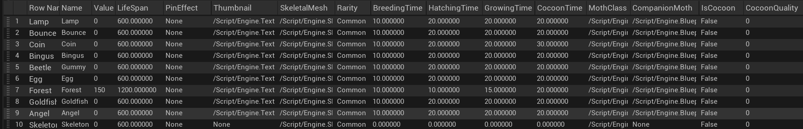
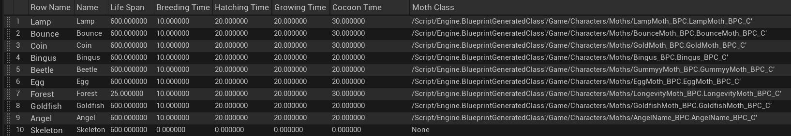
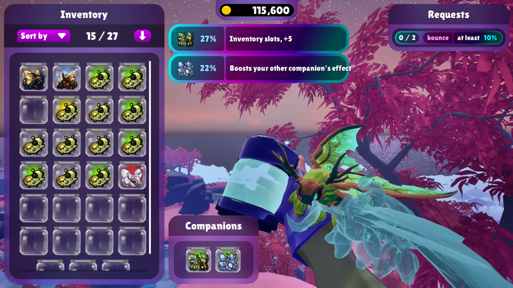
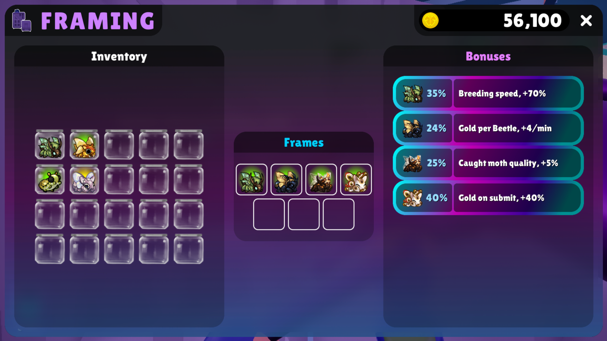

This was a 22-person student project using Unreal Engine 5, which was the largest team I had ever worked with. It was the first opportunity I had to work with all the disciplines studying at the school. Our version control was a Perforce repository set up by our school's IT department. The leading roles I served on the team were Quality Advocate and gameplay programmer.
My responsibilities as the Quality Advocate were processing weekly unit tests and maintaining a weekly playable build for our instructors. I enjoyed it. As the QA on our team, it was my first time experiencing work outside of gameplay and programming, but it allowed me to work with each member of my team and see ways for us to improve our game together. Together, some of my teammates and I would find things that were breaking or didn't feel right in terms of quality and experience for the game. While I had this role, I was still contributing to the game through gameplay implementation.
As a programmer, I worked with my teammates and led sprints for the gameplay features that I oversaw and helped complete. This included the implementation of Companion moths, the Moth Incubator, the Moth Frame, and a Moth Manager. Additionally, I worked on these alongside data tables containing all the information about the moths, so iteration was easy. Additionally, I helped with the back-end development of establishing the pipeline between UI and gameplay, and inventory and gameplay.
Quality Advocate
Each leadership role during this project had a mentor to reach out to for questions, and they gave a helping hand to get us started. Our QA (Quality Advocate) mentor provided examples and general ideas on what to include in our weekly unit tests. The basic idea of ensuring everything worked as intended was the ratings: Failed, Partial, Passed. The way to use the spreadsheet was simple, so other members would easily be able to mark it as just a checklist. I would fill it out by playing through the game, thinking like a player at first and then trying to see how fast I could break new features by hand. I would also fill out our weekly build notes in tandem with the sheet to log any outstanding features for our project leads and directors.
There's a lot I learned from hindsight alone. One mistake I made was not creating a more precise workflow for my teammates to use to help fill out the weekly builds checklist. I had help with bigger milestones, but for each other standard week, it was usually just me filling things out at the last moment due to other classes and projects. If I had created the checklists earlier, the team would be able to use them. Reasons for the checklist being filled late were usually that people needed more time to add something new, and it would end up being the same build as before if not. The biggest problem I experienced as QA, which was also a mistake to acknowledge, was that there were some parts I couldn't test properly since they weren't my field at all in terms of what our project directors would be grading on.
Specifically, the audio and art perspectives were parts I couldn't test as well or with their experienced perspective; so, I only had the view of a new player for those aspects. One person from each discipline is the best solution for what we were going through. It would have been a great way for my other members to understand how it was interacting with other elements of the game and help keep us all more connected to the game’s original vision.
Gameplay Engineering
Moth Data Tables
Using Unreal’s Data Table system, I went through a couple of iterations of what to include and set it up to work similarly to a C++ std::map. With the data table, designers or I would be able to change variables similarly to a spreadsheet, and the code using it would be able to handle whatever the variables were changed to. This allowed us to change thumbnails, moth models, names, attach companion effects, and modify durations in places like the Incubator, all in one place.

For the Moth Manager, it was necessary to create a simplified version of the data table because there wasn't a way to swap out the row struct after it was created, so it felt like the best option at the time. I made this struct in the same file as the Moth Manager, which made it easier to use with Unreal's C++.

Moth Manager
The Moth Manager was intended to manage a much more complex idea than it ended up as. In early development, I had gotten it to manage the mechanics of moth lives essentially. All moths in the world, as soon as they are created, would have a unique ID, and their lives would be on a timer. After the timer expired, they would be destroyed wherever they were, whether in containers within the shop, the incubator, or even the player's inventory. This was a pretty convoluted idea and didn't have enough time to be polished for the end, so it was reworked and became only a way to create/destroy moths and give them a unique ID. The unique ID was vital, since we had to compare moths, and the inventories included a sorting feature; it was the simplest way to make sure it could identify that it was comparing against itself.
Companion Moths
Utility via Moth powers
The concept of the companion moths in the game quickly became a big favorite among the team and anyone who saw them in action. The idea stemmed from using them as a general idea of progression and game manipulation. Specifically, their abilities that could give incredible jumping power or speedier movement gave players a greater sense of control and immersion in the world they were experiencing. The power the moths shared came directly from the quality of it, so a quality of 100, the max that can be attained through breeding, was the most extreme experience players would get from a moth. To put it in perspective, slightly easier if a Bounce Moth of a quality of 10 would increase the player’s jump power by 10 percent, and then a quality of 100 would increase it by 100%. It created unique ways to play the game – even stacking if two moths of the same kind are equipped.

Using the Moth Data Tables and Moth Manager, the moths were much easier to manipulate -- ensuring they would work correctly. Since this was one of the bigger features I was leading in, I designed the backend classes and systems that allowed companions to be changed in menus as well as the general design of the parent to child class relationship that let my teammate and me create the first iteration of all 9 moths' within a month.
Moth Incubator
The Breeding Tank had originally been planned to contain the entire birth and initial life cycle of the moth. From the moth's breeding to eggs hatching, caterpillars growing and forming cocoons, and finally a fully grown moth once their time in the cocoon was up. I created an Unreal object that would be fully contained within itself to update and progress to the next stage when the conditions were met. Each stage would have its own constraint on whether they could continue progressing, like food for caterpillars, for instance, which was easy to implement since they updated individually. This also involved a food system where we would define a food object and give it an energy amount or the time it takes to be consumed. So every caterpillar in the tank was able to take part in a whole apple.
The features altogether became too much for our team to handle since new ideas were coming up and were overwriting previous ideas too fast, and the content inevitably was cut. So, in the end, these moths became mammals, and only the breeding stage was kept.
Moth Frame

The Moth Frame was quicker to implement, considering the difficulty of the other features. In a week, I was able to roughly implement the Moth Frame effects for each moth and place the code required in any features they would be affecting. The Moth Frame, in essence, was a container to create modifiers for gameplay, including breeding time, money earned, bonus money when a moth is caught, and even money over time based on how many moths you have.
The most difficult one was the last one with money based on moths you had. It required adjusting variables within the moth manager and establishing a difference between a caught moth and a wild moth, and being able to remove moths from that list without it breaking, and there being stragglers in code when they were switched out.
Modifications for Upgrades
The modifications to handle the upgrade system in the market were mostly handled as unlocks for additional inventory slots. The upgrades for companion moths were unlocking the ability itself and then purchasing their extra slot for a max of two companions at once. The upgrade for Breeding Tanks worked similarly and was implemented to reveal extra Breeding Tanks in the player's moth house. Finally, the Moth Frame upgrade was the ability to get more slots, so the player could also have additional bonuses at a time, with a max of 9 slots. Both the Companion Moth and Moth Frame upgrades worked by increasing the inventory component size of the inventory slots used to hold moths, making it so that the upgrades could be iterated easily to manage adding either another companion moth or even more Moth Frame Slots.